Tokyo
Es actualmente la ciudad más poblada del mundo, en conjunto es una de las 47 prefecturas de Japón. Es el centro de la política, economía, educación, comunicación y cultura del país. Cuenta también con la mayor concentración de sedes corporativas, instituciones financieras, universidades y colegios, museos, teatros, establecimientos comerciales y de entretenimiento de todo Japón.
Con una población de unos 37 millones de habitantes, se subdivide en 23 barrios (区 -ku); 26 ciudades (市 -shi); un distrito (郡 -gun) subdividido en tres pueblos (町 -chō o -machi) y una villa (村 -son o -mura); y cuatro subprefecturas (支庁 -shichō) subdivididas en dos pueblos y siete villas, que representan a varias pequeñas islas al sur de Honshu que se extienden más allá de 1800 km de Shinjuku, capital de la metrópoli y sede de la gobernación.